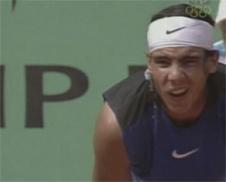
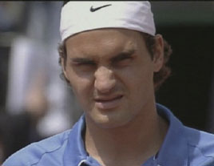

Previous: How Effective Is Playing the Net Really | 🏠 Strategy Home | Next: How Roger Federer Won Wimbledon 2006
How Nadal Won the French Open 2006
Comprehensive unified tennis knowledge base — Fundamentals, Stroke Analysis, Reference Library, and more
How Nadal Won the French Open 2006
John Yandell
The boxer, the magician and the stare down.
I love Rafael Nadal. And I love Roger Federer. In some ways they remind me of one of the most inspiring and fascinating rivalries of all time: John McEnroe and Bjorn Borg. Except in this case the unbelievable baseline defender is the temperamental one. And the magical all court player is the calm one.
Anyone else notice that Rafa is developing an Elvis-like crooked sneer? And how about that little stare down right before the coin toss? Nadal jumping around like Mohammad Ali? Anyone see the look on Federer's face? It was subtle--like everything about him--but different than the usual expressions you see from Roger. Fierce is the word that comes to mind. The message I read into it was something like: "Dude, you won't be jumping around like that after I finish cutting you to pieces."

The Nadal sneer--the new Spanish Elvis?
Wow, I thought, this could be a great, great match. Which we all know it wasn't. To me it was sad that it didn't happen, mainly because Roger didn't seem to rise fully to the occasion. Don't get me wrong, Nadal won the match, and he fully deserved it. But it also seemed that it could have gone the other way with just a shot or two here and there, and I was rooting for the Roger Slam. I saw Mac miss that famous backhand volley in the third set of the French final against Ivan Lendl in 1984. Mac never got another shot. Hopefully that won't be the same for Roger.
So, what really happened? We've had some great commentary in the Forum about the match from Craig Cignarelli and others. (Click Here.) Federer played one of the most tactical oriented matches I've ever seen and Craig put his finger on what happened in the exchanges. You just don't see top pro players do what Roger did, hitting the patterns he tried to work Nadal's backhand and/or stay away from his forehand. Amazingly, I didn't hear one word about it from McEnroe and Carillo. To me that was more depressing than the outcome of the match.

Federer: subtle but fierce.
This article gives a different perspective on what happened by using a more detailed type of match charting than is used on television. In particular we'll look at a statistic called the Aggressive Margin, which tells the story of the match.
To determine the Aggressive Margin, we add a player's total winners to his total forced errors. A forced error is an error you cause your opponent to make through the pressure of your shot. After we add together the winners and forced errors, we subtract the unforced errors. This number is the Aggressive Margin. The Aggressive Margin can be either a positive or a negative number. It can be calculated for a match, a set, or an individual stroke. In high level pro tennis, these numbers are almost always positive, though typically lower on clay courts compared to grass or hardcourts.
I've written quite a bit about the Aggressive Margin in the past, but not recently, so if you want to learn more you can check out the series of articles that give a more detailed explanation and show how it explains pro matches and matches at all levels. (Click Here.)
One big problem in studying pro matches is that you can't calculate the Aggressive Margin based on TV or even tournament website statistics. The reason is that they don't record the Forced Errors. Without the forced errors statistic, you can't fully make sense of the matches. Have you ever noticed that the TV and or website numbers don't add up? The Nadal/Federer match is a typical example.
How were the points really won and lost?
In the final Nadal won 121 total points. Federer won 109. That's only 12 points difference. That's pretty close over a 4 set match. The difference between winning and losing was an average of just 3 points a set. But how did the players win their points? According to the official Roland Garros website, Nadal hit 28 winners (including service winners and aces). Nadal also won 51 points on Federer's unforced errors. That's a total of 79 points for Nadal. But that's only about 2/3 of the total point count of 121. What about the other 42 points?
How did Rafael win the rest of his points? Right, he won them on Forced Errors. The unknown statistic. The pressure of his shots caused Roger to make 33 Forced Errors. Nadal won more points creating forced errors than he did hitting clean winners.
Now let's look at Federer's numbers. Roger won 109 points. He hit 43 winners (including serve), and he won 28 points on Nadal's unforced errors. That accounts for only 71 of his 109 total points. Again, the missing info is the 38 Forced Errors Roger generated by pressuring Nadal. So Roger won about the same number of points on Forced Errors as he did hitting winners.
Winners
Forced Errors
Unforced Errors
Aggressive Margin
Nadal
25
33
38
+20
Federer
43
28
63
+8
With this key additional information, we can now calculate the Aggressive Margin. Remember, the Aggressive Margin is the total number of winners and forced errors, less the unforced errors. So for Nadal that's 28 Winners plus 30 Forced Errors, less 38 Forced Errors. Nadal's Aggressive Margin was Plus 20. For Federer it's 43 Winners plus 38 Forced Errors, less 63 Forced Errors. So, Federer's Aggressive Margin was Plus 8.
If you subtract the loser's Aggressive Margin from the winner's you are left with the point differential in the match. In this case, Nadal was +20. Federer was +8. So, the total point difference is 12 points. They played a total of 230 point and Nadal won 12 more points than Roger. And that was the difference.
The player who wins the most total points wins the match.
When you begin to chart matches you find out an interesting fact. No matter how long the match goes or who wins which set or sets, or what the actual set scores, the player who wins the most total points wins virtually every match. That was true in the French Final this year and true of almost every match I've ever charted.
Why is this? Doesn't that go against the theory of the "big points?" We've all heard the cliche: "The player who wins the big points wins the match." But from a statistical perspective that isn't really the way it happens. We know that a tennis match is basically a test of wills. In this test of wills, every point a player can accumulate has an emotional cost for the opponent. Like a boxing match, a tennis match is a war of emotional attrition. The struggle for the individual points is the real story of most matches.
By statistical standards, this year's French Final was not especially high quality. And that probably corresponds with the feeling you had watching it. As we have seen, Nadal's average Aggressive Margin was +5/set. Federer's was +2/set.
How does that compare to other finals? The numbers were lower than Gustavo Kuerten's win in 1997. Guga was +8/set, defeating Sergi Bruguera, who was +3/set. So Bruguera, the epitome of the topspin defender, actually graded out slightly higher than one of the greatest attacking players in history--Roger Federer. Here's another comparison. When Yevgeni Kafelnikov defeated Michael Stich the 1996 final, Kafelnikov was +11/set and Stitch was +6/set. So, Federer/Nadal wasn't one of the highest quality French finals, that's for sure.
As you might expect, the Aggressive Margin in clay court matches is usually substantially lower than on hard courts or grass, where the winner is usually +15/set or higher. (For a look at the highest quality statistical match I ever charted, Click Here to see the amazing number for Pete Sampras and Andre Agassi in the quarters of the 2001 U.S. Open where both players graded out at over +20/set.)
Was it some flaw in Federer's backhand?
But what does all that mean for Roger and Rafael? We can also break down the Aggressive Margin stroke by stroke. During the match it was obvious that Federer's backhand let him down. The Aggressive Margin shows exactly how this figured into the match outcome. The numbers are incredible. Over 4 sets, Federer generated a total of only 9 backhand winner and forced errors. But he made 35 backhand unforced errors. That's an Aggressive Margin of -26 on his backhand for the match! That's over -6/set!
Those are the most lopsided numbers for a single stroke I have ever charted in a pro match. In fact, Federer's backhand numbers for this match were lower most all of the junior players I've charted, and that's included some matches that, shall we say, were not played at the highest of levels.
How important was Federer's negative Aggressive Margin on his backhand to the match outcome? Put it this way. Take the backhand out of the equation and Federer wins the Roger Slam. Literally. Remember that the total point margin in the match was only 12 points. That's how many more points Nadal won over the course of 4 sets. Federer was -26 on his backhand. Those 26 points were more than twice the total point margin in the entire match! Eliminate those errors and Federer wins, not Nadal.
On most dimensions Roger won the match.
It may not have been apparent as you watched, but Federer actually won the match on every other statistical dimension. Federer was +19 on his serve. Nadal was +18 on his serve. Federer was +4 on his forehand. Nadal was +2 on his forehand. Federer was +12 at the net. Nadal was +3 at the net. If you add it all up, the difference is the reverse of the actual outcome. Leaving the backhands entirely out of it, Federer actually won 12 more points than Nadal.
The question that can't really be definitively answered but must be asked is this: What happened with Roger's backhand? Is there some fatal technical flaw in his motion, a similar problem to what we saw with Andy Roddick? I don't think so. More on this in later articles, but I think the high-speed footage shows that Federer's backhand is fundamentally rock solid, and actually technically more advanced than many great one-handers.
So, what then? One of the things Mac kept saying did make a lot of sense. It was the same thing I was wondering myself. Why did Roger insist on trying to come over or flatten out almost every ball on the backhand side? Why didn't he hit more slice, especially on high balls, and especially when he was missing so many drives.
We know Federer also tried to stay away from Nadal's forehand. This meant hitting backhands down the line, and a lot of forehands inside in. What if instead he had mixed in backhand slices crosscourt, his slice backhand versus Nadal's forehand. It's the same tactic Robert Lansdorp always told me he thought Pete should try at the French. Try to hit through the ball with heavy slice, make it dig into the clay stay low, and see how the guys with the extreme grips dealt with it. What if Roger had done that to Nadal? What opportunities to attack might have come out of that? Or Nadal forehand errors?
The thing that was hardest to understand in the match to me was that so many of those Federer backhand drive errors seemed so careless. I mean a lot of the swings looked really casual and they happened at bizarre times in the points when Roger was under relatively no pressure. Many years ago, when I first saw Roger play at Indian Wells, I noticed the same pattern. Roger had a beautiful game, but these inexplicable casual errors gave the impression (to me at least) that he wasn't really trying that hard--that maybe he didn't have the mental tenacity to go much further up the food chain.
What if Roger had hit that backhand crosscourt with slice?
I'm not the first observer to be wrong about something like that. (A lot of experienced coaches said the same thing about Pete.) But I was reminded of that old impression watching the French final. I also noted that Federer's body language seemed less strong and/or confident in this final, whereas for the last few years he has seemed almost serene under every condition. I think the bottom line is that the French final proved Roger is still human.
He wanted the Roger Slam and he was nervous enough about that that it threw his game off just enough to make the difference. The situation may have been emotionally similar to what I saw at Indian Wells. And maybe the antics of Rafael Nadal had something to do with it as well. Maybe that's the way Roger deals with it. It's not exactly choking, but he just loses control of his shots at surprising times. Maybe that's the way he gives into his own nerves. It's a hypothesis anyway.
But I couldn't help but wonder what if Roger had just backed off and just hit a ton of backhand slices crosscourt? I would have loved to have seen if that changed the match.
I've thought for a few years that at the level of the Grand Slams, that clay court tennis and hard court and/or grass court tennis might have become two different games--and that it wasn't possible to pass back and forth and win at both. Somehow Agassi did it but it took him the better part of two decades. I'd still love to see Roger do it too, even if it's not a Roger Slam. And I'd like to see Rafael Nadal win Wimbledon too. We'll know about that one in a few days. Maybe it'll be Rafa not Roger who walks across that bridge. Or maybe neither one can.

John Yandell is widely acknowledged as one of the leading videographers and students of the modern game of professional tennis. His high speed filming for Advanced Tennis and Tennisplayer have provided new visual resources that have changed the way the game is studied and understood by both players and coaches. He has done personal video analysis for hundreds of high level competitive players, including Justine Henin-Hardenne, Taylor Dent and John McEnroe, among others.
In addition to his role as Editor of Tennisplayer he is the author of the critically acclaimed book Visual Tennis. The John Yandell Tennis School is located in San Francisco, California.
Source: tennisplayer.net archive — How Nadal Won the French Open 2006.docx (John Yandell teaching library, 2002-2022). Extracted and rendered as HTML for Tennis Future Lab.